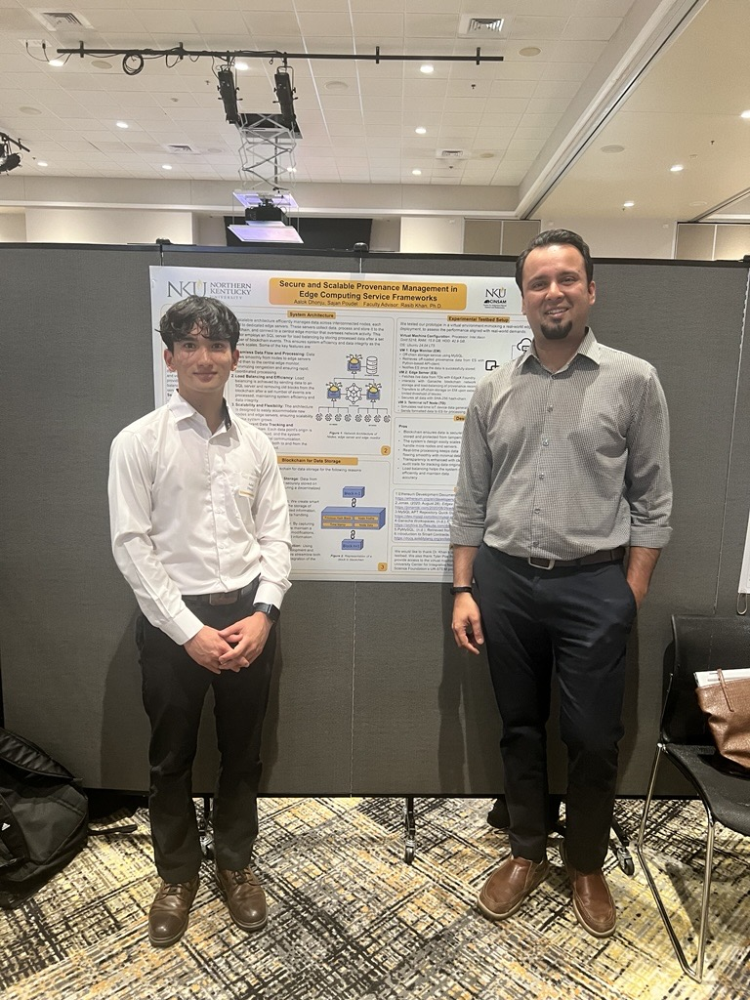

Hello, I'm
Aalok Dhonju
Student Researcher & Tech Enthusiast


Education

Northern Kentucky University
Bachelor of Science in Computer Information Technology (Expected Graduation May 2026)
- Network and System Administration Track | Minor in Health Informatics and Information Security
- Cumulative GPA: 3.925/4.00
- Honors and Awards: US Bank Cyber Security Scholarship, COI President's List 3x, COI Dean's List, Haile COB Dean's List, Haile Enrichment Fund, International Merit Scholarship, EDGE and EDGE+ Scholarship, Fidelity NKU Hackathon Winner (2024)
 Experience
Experience
Chartwells Higher Ed
Intern (October 2023 - Present)
- Administered NKU Dine-on-Campus website, responsible for implementing changes to enhance UX
- Develop and analyze marketing data, leveraging analytics to improve digital outreach and engagement
- Manage digital marketing displays using Wand Digital and optimize social media strategies with Sprout Social
Northern Kentucky University
Student Researcher (May 2024 - December 2024)
- Conducted research on Secure Service Provenance in Edge Computing frameworks, guided by Dr. Rasib Khan
- Ensured data integrity and authenticity in decentralized systems using advanced cryptographic methods and blockchain technology
 Projects
Projects
Secure Service Provenance in Edge Computing
Set up and managed MySQL Server, creating automated Python scripts to streamline data extraction and storage.
- Integrated Local APIs with databases for efficient and secure data transfer.
- Enhanced system integrity using blockchain, hash chains, and robust security protocols.
- Deployed and maintained multiple VM instances, ensuring optimal configuration and performance.
Unix System Administrator Tool Using Python
A comprehensive system administration tool using Python to automate various tasks, including:
- User Management: Create, delete, and update user accounts, including batch creation from CSV files.
- System Monitoring: Track CPU and memory usage, check disk space, and list running processes with filtering options.
- File Organization: Automatically categorize files in a directory based on their extensions.
- Log Monitoring: Detect critical log entries and monitor file access changes.
- Email Notifications: Automatically send emails after completing user management tasks and system monitoring.